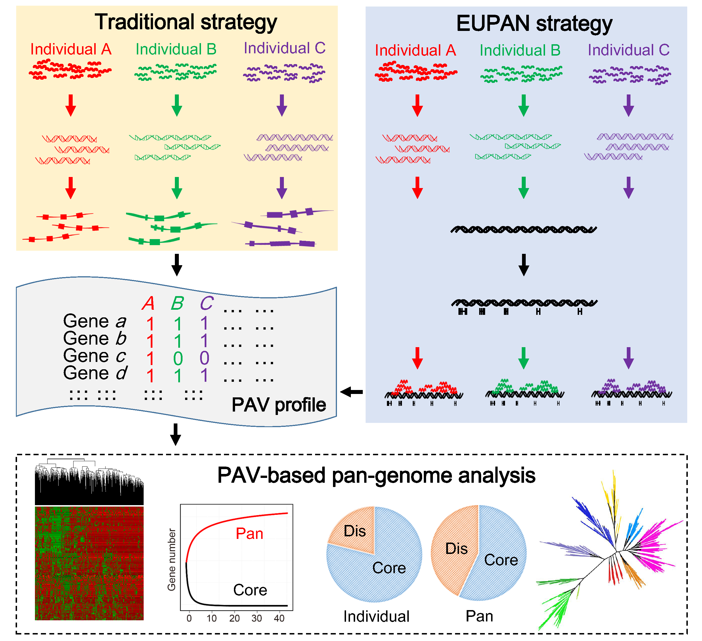

Pan-genome analyses of bacteria and archaea are routinely carried out to interpret the within-species variation. However, eukaryotic pan-genome analyses are limited by the large sizes and high complexities of their genomes. Therefore we develloped a new strategy ---- EUPAN, specific for eukaryotic pan-genome analyses. Based on our experience in the 3,000 rice genome project, EUPAN enables accurate detection of gene presence-absence variations (gene PAVs) at sequencing depth of ~20x. EUPAN can be directly applied to current large re-sequencing projects primarily aimming to explore single nucleotide variations (SNVs).
We proposed EUPAN strategy primarily in the 3,000 rice genome projects. EUPAN utilizes a "map-to-pan" strategy to determine gene PAVs of each individual. EUPAN strategy involves
- the parallel quality control of raw sequencing data;
- de novo assembly of individual genomes;
- construction of pan-genome sequences based on the de novo assemblies and available reference genomes;
- gene annotation of the pan-genome sequences;
- determination of PAVs based on mapping individual reads to pan-genome sequences;
- PAV-based pan-genome analysis.
Eukaryotic large genome studies always involve big data and various softwares; and require very careful parameter selection process. Therfore EUPAN toolbox provides two versions of tools: 1) single machine version and 2) LSF version (working on supercomputer based on LSF system, in which, "bsub" is used to submit jobs).
Contact Information
Zhi-Qiang Hu: doodlehzq@sjtu.edu.cn
Chao-Chun Wei: ccwei@sjtu.edu.cn
News
- 2016.4.6 version 0.3 released.
- Add a novel tool ----"sim", to simulate the pan-genome and core-genome size.
- The "geneCov" tool is optimized to generate no intermediate files and its speed is faster.
- 2016.3.25 version 0.2 released.
- Fix bugs in the parallelization of the "sam2bam" tool.
- 2016.1.25 version 0.1 released.